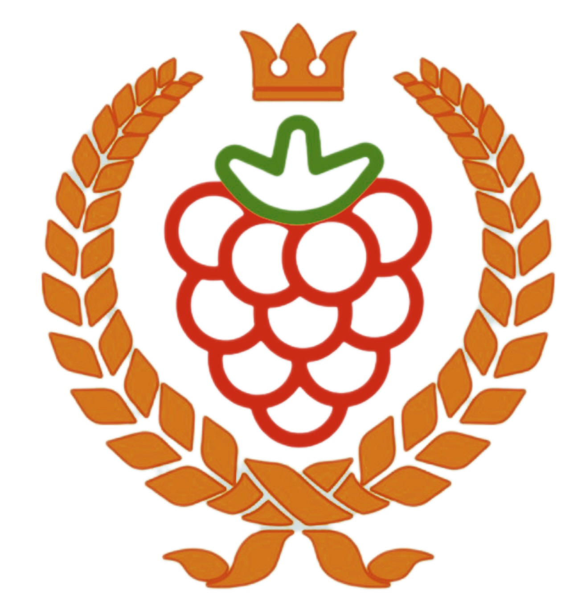

Freeberry is a collective rooted in the wisdom of First Nations freedoms and traditions, prioritizing natural resources for sustenance and skill-sharing over commercial interests.
Freeberry is a collective rooted in the wisdom of First Nations freedoms and traditions, prioritizing natural resources for sustenance and skill-sharing over commercial interests. Our collective consists of like-minded individuals dedicated to the principle of living sustainably off the land, while fostering and giving back to their local communities.
We reject commercial exploitation of natural resources, focusing instead on sharing ancestral and practical knowledge to ensure self-sufficiency and communal well-being.
If we lean into the phrase "Free Berry" as a metaphor for a free individual, it creates a vivid, organic image of autonomy. Rather than picturing freedom as something cold, stark, or mechanical, "Free Berry" evokes a natural, vibrant state of being.
A traditional berry grows on a managed farm, destined to be picked, packaged, weighed, and sold. A "Free Berry," by contrast, grows on a wild bramble. It owns its own timeline. It isn’t cultivated for someone else’s consumption or profit; it ripens purely because it is its nature to do so. As an individual, this represents self-ownership—living outside the constraints of conventional expectations, institutional labeling, or systemic dependencies.
Wild berries grow on thorny bushes, often clinging to rocky soil, exposed to the elements. They don't have a gardener protecting them, yet they thrive. A "Free Berry" individual is resilient. They have developed their own "thorns" (boundaries) to protect their sweetness (inner peace and authenticity) from a world that might otherwise try to pluck or exploit them.
A free individual under this moniker is bursting with unique, unadulterated flavor. They haven't been genetically modified or polished to look uniform on a supermarket shelf. They might be asymmetrical, deeply stained by the sun, or intensely tart—but they are entirely authentic. Their vibrant energy comes from directly absorbing the elements of their environment on their own terms.
Eventually, a wild berry becomes so ripe that it falls from the vine effortlessly. It doesn't cling to its past support structures. In human terms, this is the ultimate evolution of freedom: the ability to let go of old attachments, comfort zones, or external validations, trusting oneself to drop into new soil and start something entirely fresh.
"In short, a Free Berry is someone who lives wildly, protects their inner sweetness with fierce boundaries, and refuses to be packaged for anyone else’s shelf."
FreeBerry Cash ($FBC) is our localized bartering currency to exchange value for goods and services amongst other members on the TRON Blockchain.
Engage in the Freeberry economy by offering your goods, services, or expertise in exchange for $FBC.
Donate USDT on TRX Blockchain and receive Freeberry Cash $FBC in exchange.
"$FBC offered in exchange for donations will be limited to 50,000 $FBC, the remaining 50,000 $FBC supply will be distributed amongst Freeberry native members and retained for future community event distributions to be announced."
By donating USDT to the Freeberry native community, your contributions directly support expanding the accessibility of knowledge provided by our members.
The physical heart of the Freeberry economy is situated in South Head. This is where our community actively demonstrates self-sufficiency.
While our physical roots are deep, our economy is not bound by borders. Free-trade is encouraged anywhere individuals can exchange goods, services, and barter using $FBC.
Join the Freeberry community and start participating in an economy that values sustainability, shared knowledge, and self-reliance.
Start Your Journey